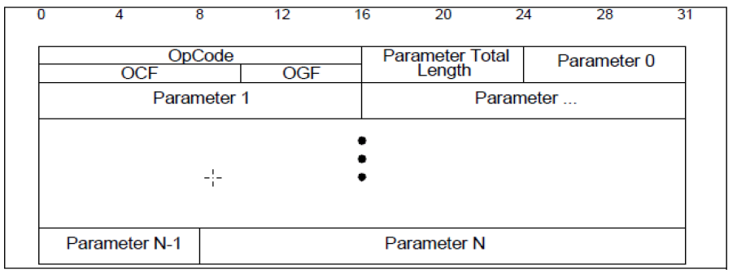
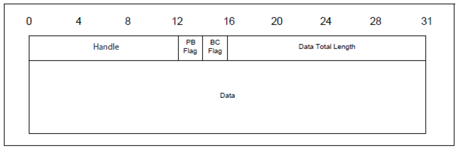
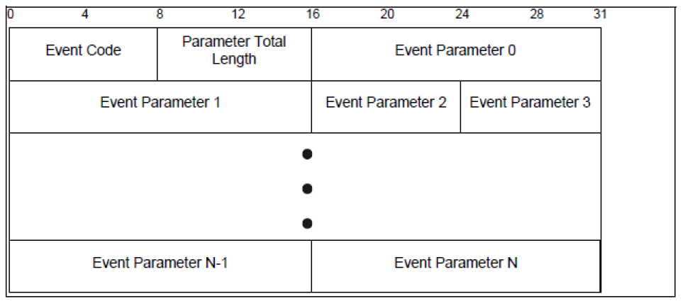

Cordio Bluetooth LE User Guide
This library implements the Bluetooth Low Energy stack, forked from Packetcraft. It depends on additional libraries within the msdk repository. All applications utilizing this library can be found in the Examples directory of an MSDK installation.
Supported Features
- LE Dual Mode Topology: Advertise/Scan while maintaining multiple adjacent connections.
- 2M PHY: High-speed PHY with 2 Mbps symbol rate.
- Coded PHY: Forward error correction, 125 kbps or 500 kbps symbol rate.
- Extended Advertising: Enhanced advertising and scanning.
- Periodic Advertising: Broadcasting and receiving periodic advertisements.
- EATT: Enhanced Attribute protocol.
- LE Secure Connections: LE Secure Connections is an enhanced security feature introduced in Bluetooth v4.2. It uses a Federal Information Processing Standards (FIPS) compliant algorithm called Elliptic Curve Diffie Hellman (ECDH) for key generation.
- Data Length Extension: Extend the maximum data length supported in a connection.
- LE Power Control: Dynamic TX power control.
- *OTA firmware update: Over-the-air firmware update is not a standard Bluetooth feature. We have a wireless data exchange service that can be used for OTA firmware updates. See the BLE_otac_otas examples, the ADI Attach smartphone app, and BLE-PyDex for details.
Features in Development
- Direction finding: Detect the direction of the incoming signal. Also known as Angle of Arrival (AoA) and Angle of Departure (AoD). Hardware support on MAX32655 and MAX32690, unavailable on MAX32665, software in development.
- LE Audio: Isochronous audio with Bluetooth LE. Hardware support on all platforms, software in development.
Getting Started
The best application to get started with is the BLE_periph application. It is a simple peripheral application that will allow you to advertise and connect with a central device such as a smartphone.
Follow the MSDK User Guide instructions to install the necessary tools and create a new project. Build and run the BLE_periph application for the appropriate target.
Building
Most of the source code will be built in a library that can be shared between applications. Different variants will be built based on settings in project.mk.
# Cordio library options
# This will include the Bluetooth Host portions of the stack in the build.
BLE_HOST = 1
# This will include the Bluetooth Controller portions of the stack in the build.
BLE_CONTROLLER = 1
# Typical system on chip devices will typically include both the Host and the Controller.
# Applications for lower level testing will only include the Controller, and use an HCI
# interface to communicate with an external Host.
# Peripheral devices will be typical for micro controllers and mobile, battery powered devices
# These devices will advertise and can be connected to central devices.
INIT_PERIPHERAL = 1
# Central devices are typically high power devices like a cell phone or a base station
# Central devices will scan and initiate connections with peripherals.
INIT_CENTRAL = 0
# TRACE option
# Set to 0 to disable
# Set to 1 to enable serial port trace messages
# Set to 2 to enable verbose messages
TRACE = 1
Bluetooth LE Basics
References
The Bluetooth Special Interest Group (SIG) has documentation available on its website. For the latest core specification, refer to the documentation page. This will be your best resource for learning the details of Bluetooth Low Energy.
These books are also excellent references for developers.
- Getting Started with Bluetooth Low Energy by O'Reilly
- Bluetooth Low Energy: The Developer's Handbook by Robin Heydon
Architecture
The Bluetooth stack closely resembles the layers of the network stack. We have the application layer at the top and the physical layer at the bottom. Each layer encapsulates the data and passes it to the appropriate section of the upper and lower layers.

The Host Controller Interface (HCI) is the common point where devices are split. Typically this interface is over an asynchronous protocol such as UART. Some devices will define proprietary interfaces between the application and host layers. Multi-core SOCs can also use the HCI or proprietary interfaces to split the stack between multiple CPUs.
Test equipment will have a USB interface and act as a Host device when testing the Controller layers. Devices under test will use a USB to UART adapter and act as Controller devices.

States
These are the common states used in Bluetooth LE communication. Typically devices will be in only one of these states at a time, but it is possible for devices to be in all simultaneously.
Advertising
Devices in this state are broadcasting advertisement packets to scanning/initiating devices. This is an asynchronous operation that has no synchronization with peer devices. Advertising devices transmit without any previous knowledge of peer devices. Advertising and scanning operations are done on channels 37, 38, and 39. The interval between advertising events is configurable between 20 ms and 10.24 s.

Scanning / Initiating
Devices in the scanning state listen for advertising devices and can send scan optionally requests for additional information. The scanning interval and window settings are configurable.
If a device is scanning with the intent of connecting to a specific device, that is called the initiating state. The initiating devices will send a connection indication to the desired advertising device to indicate its desire to create a connection.
Connected
Once an initiating device sends the connection request and the advertising device accepts the connection request, the two devices enter the connected state. This is a point-to-point connection allowing devices to exchange information directly.
In order to minimize interference, devices in the connected state will hop between channels 0-36 in a pseudo-random order. The channel hopping information is communicated in the connection indication.
Each connection event is separated by the connection interval. This interval is configurable from 7.5 ms to 4 s. The master will always transmit first and receive second. The Slave will always receive first and transmit second. Devices will typically always send and receive at least one packet in each interval, and they can optionally transmit and receive multiple packets in each interval.

Cordio Stack Architecture
This document describes the Cordio software architecture. Refer to the Bluetooth specification Volume 1, Part A for additional information regarding the Bluetooth architecture.

Application
The App Framework performs many operations common to Bluetooth LE embedded applications, such as:
- Application-level device, connection, and security management.
- Simple user interface abstractions for button press handling, sounds, display, and other user feedback.
- An abstracted device database for storing bonding data and other device parameters.
Profiles and Services
The GATT Profile specifies the structure in which profile data is exchanged. This structure defines basic elements, such as services and characteristics, used in a profile. The top level of the hierarchy is a profile. A profile is composed of one or more services necessary to fulfill a use case. A service is composed of characteristics or references to other services. Each characteristic contains a value and may contain optional information about the value. The service and characteristic and the components of the characteristic (i.e., value and descriptors) contain the profile data and are all stored in Attributes on the server.

Wireless Stack Framework
The Wireless Software Foundation (WSF) is a simple OS wrapper, porting layer, and general-purpose software service used by the software system. The goal of WSF is to stay small and lean, supporting only the basic services required by the stack. It consists of the following:
- Event handler service with event and message passing.
- Timer service.
- Queue and buffer management service.
- Portable data types.
- Critical sections and task locking.
- Trace and assert diagnostic services.
- Security interfaces for encryption and random number generation.
Platform Adaption Layer
The Platform Adaption Layer is the abstraction between the software stack and the hardware. It includes APIs for timers, UART, RTC, and various system-level functions such as sleep and memory management.
Attribute Protocol
The ATT subsystem implements the attribute protocol and generic attribute profile (GATT). It contains two independent subsystems: The attribute protocol client (ATTC) and the attribute protocol server (ATTS).
ATTC implements all attribute protocol client features and is designed to meet the client requirements of the generic attribute profile. ATTC can support multiple simultaneous connections to different servers.
ATTS implements all attribute protocol server features and has support for multiple simultaneous client connections. ATTS also implements the server features defined by the generic attribute profile.
Device Manager
The DM subsystem implements device management procedures required by the stack. These procedures are partitioned by procedure category and device role (master or slave). The following procedures are implemented in DM:
- Advertising and device visibility: Enable/disable advertising, set advertising parameters and data, and set connectivity and discoverability.
- Scanning and device discovery: Start/stop scanning, set scan parameters, advertising reports, and name discovery.
- Connection management: Create/accept/remove connections, set/update connection parameters, and read RSSI.
- Security management: Bonding, storage of security parameters, authentication, encryption, authorization, random address management.
- Local device management: Initialization and reset, set local parameters, vendor-specific commands. DM procedures support the Generic Access Profile (GAP) when applicable.
Security Manager Protocol
The Security Manager Protocol (SMP) is the peer-to-peer protocol used to generate encryption keys and identity keys. The protocol operates over a dedicated fixed L2CAP channel. The SMP block also manages the storage of the encryption keys and identity keys and is responsible for generating random addresses and resolving random addresses to known device identities. The SMP block interfaces directly with the Controller to provide stored keys used for encryption and authentication during the encryption or pairing procedures.
The SMP subsystem implements the security manager protocol. It contains two independent subsystems:
- The initiator (SMPI). SMPI implements the initiator features of the security manager protocol and has support for multiple simultaneous connections.
- The responder (SMPR). SMPR implements the responder features of the security manager protocol and has support for only one connection (by Bluetooth specification design).
SMP also implements the cryptographic toolbox, which uses AES. The interface to AES is asynchronous and abstracted through WSF. SMP also implements functions to support data signing.
Logical Link Control Adaptation Protocol
The L2CAP (Logical Link Control Adaptation Protocol) resource manager block is responsible for managing the ordering of submission of PDU fragments to the baseband and some relative scheduling between channels to ensure that L2CAP channels with QoS commitments are not denied access to the physical channel due to Controller resource exhaustion. This is required because the architectural model does not assume that a Controller has limitless buffering or that the HCI is a pipe of infinite bandwidth.
L2CAP Resource Managers may also carry out traffic conformance policing to ensure that applications are submitting L2CAP SDUs within the bounds of their negotiated QoS settings. The general Bluetooth data transport model assumes well-behaved applications and does not define how an implementation is expected to deal with this problem.
Host Controller Interface
The HCI subsystem implements the host-controller interface specification. This specification defines commands, events, and data packets sent between a Bluetooth LE protocol stack on a host and a link layer on a controller. The HCI API is optimized to be a thin interface layer for a single-chip system. It is configurable for either a single-chip system or a traditional system with wired HCI. This reconfigurability is accomplished through a layered implementation. A core layer can be configured for either a single-chip system or wired HCI. A transport and driver layer below the core layer can be configured for different wired transports such as UART.
Link Layer
The link layer is responsible for the creation, modification, and release of logical links (and, if required, their associated logical transports), as well as the update of parameters related to physical links between devices. The link layer achieves this by communicating with the link layer in remote Bluetooth devices using the Link Layer Protocol (LL) in LE. The LL protocol allows the creation of new logical links and logical transports between devices when required, as well as the general control of link and transport attributes such as the enabling of encryption on the logical transport and the adapting of transmit power on the physical link.
Physical Layer
The PHY block is responsible for transmitting and receiving packets of information on the physical channel. A control path between the baseband and the PHY block allows the baseband block to control the timing and frequency carrier of the PHY block. The PHY block transforms a stream of data to and from the physical channel and the baseband into required formats.
ADI Attach
ADI Attach is a smartphone application that can be used for Bluetooth debugging and development.
- Scan for advertising peripherals.
- Connect to devices and discover profiles and services.
- Read and write characteristics.
- Subscribe to notifications.
- Perform over-the-air firmware updates with supporting devices.
BLE-PyDex
BLE-PyDex is a hardware-agnostic Bluetooth device explorer designed to aid in the development and debugging of Bluetooth applications.
https://github.com/EdwinFairchild/BLE-PyDex
Frequently asked questions
How do I change the advertising parameters?
Peripheral applications will have a static structure that contains all of the advertising parameters. If run-time changes are desired, you must call AppAdvStop() before changing the parameters and AppAdvStart() to resume.
With this configuration, the device will advertise at a fast interval (300 * 0.625 = 187.5 ms) for 5 seconds. It will then advertise slowly (1600 * 0.625 = 1000 ms) indefinitely.
/*! configurable parameters for advertising */
static const appAdvCfg_t datsAdvCfg = {
{ 5000, 0}, /*! Advertising durations in ms, 0 is infinite */
{ 300, 1600} /*! Advertising intervals in 0.625 ms units */
};
How do I change the connection parameters?
Only the master of the connection can change the connection parameters. Peripheral devices can request a change, but only the master can accept and set the connection parameters. Cell phones and mobile operating systems have different restrictions on connection parameters.
Peripheral applications have the following structure that is used to request connection parameter updates.
/* iOS connection parameter update requirements
The connection parameter request may be rejected if it does not meet the following guidelines:
* Peripheral Latency of up to 30 connection intervals.
* Supervision Timeout from 2 seconds to 6 seconds.
* Interval Min of at least 15 ms.
* Interval Min is a multiple of 15 ms.
* One of the following:
* Interval Max at least 15 ms greater than Interval Min.
* Interval Max and Interval Min both set to 15 ms.
* Interval Max * (Peripheral Latency + 1) of 2 seconds or less.
* Supervision Timeout greater than Interval Max * (Peripheral Latency + 1) * 3.
*/
/*! configurable parameters for connection parameter update */
static const appUpdateCfg_t datsUpdateCfg = {
0,
/*! ^ Connection idle period in ms before attempting
connection parameter update. set to zero to disable */
(15 * 8 / 1.25), /*! Minimum connection interval in 1.25ms units */
(15 * 12 / 1.25), /*! Maximum connection interval in 1.25ms units */
0, /*! Connection latency */
600, /*! Supervision timeout in 10ms units */
5 /*! Number of update attempts before giving up */
};
The DmConnUpdate() function can also be used to request a connection parameter update from the peripheral or initiate one from the master.
/*************************************************************************************************/
/*!
* \brief Update the connection parameters of an open connection
*
* \param connId Connection identifier.
* \param pConnSpec Connection specification.
*
* \return None.
*/
/*************************************************************************************************/
void DmConnUpdate(dmConnId_t connId, hciConnSpec_t *pConnSpec);
How do I use the low-power modes?
All of the applications will enter sleep mode in idle when built with DEBUG=0. The Wireless Stack Framework (WSF) operating system will call PalSysSleep() mode when idle. With DEBUG=1, the CPU will stay in active mode to leave the debugger enabled.
To enter the lowest power states, refer to the BLE_FreeRTOS application. This will create FreeRTOS tasks for the Cordio stack and allow users to add additional tasks. Enable configUSE_TICKLESS_IDLE, and the device will enter standby mode and deep sleep between events.
WARNING: The CPU debugger is disabled in sleep modes. If your application enters sleep mode directly after reset, it will be difficult to debug and reprogram.
How do I send unformatted data like a UART?
Unfortunately, there is no Bluetooth SIG-defined standard for this protocol. This stack has a proprietary data transfer service that is used to transmit unformatted data between devices. Refer to the BLE_dats (BLE Data Server) for the peripheral application. You can connect to this device with the BLE_datc (BLE data client) application to see simple data transmission. Refer to the BLE_dats and BLE_dats README for more information.
Additional Documentation
Documentation for Python tools used for Bluetooth development and debugging can be found here.
Documentation for each of the supporting applications can be found below:
HCI Documentation
The Host Controller Interface (HCI) is the common point where devices are split. Typically this interface is over an asynchronous protocol such as UART. Some devices will define proprietary interfaces between the application and host layers. Multi-core SOCs can also use the HCI or proprietary interfaces to split the stack between multiple CPUs.
Packets
All contents in the packets are formatted little endian unless stated otherwise
Packet Types
| Packet | Packet Type |
|---|---|
| Command | 0x01 |
| Async Data | 0x02 |
| Sync Data | 0x03 |
| Event | 0x04 |
Command Packet
The HCI command packet typically consists of an HCI command header followed by command parameters. The structure of the HCI command packet is defined in the Bluetooth specification.
Here is a general overview of the HCI command packet structure:
| Type (1 Byte) | OpCode (2 Bytes) | Parameters (N Bytes) |
|---|---|---|
| 0x01 | 0xXXXX | ... |

Opcodes are mix of Opcode Group Field (OGF, 6 Bits) and the Opcode Command Field (OCF, 10 Bits)
Opcode = (OGF << 10) | OCF
Below is an example of the BLE standard command for reset
RESET
| OGF | OCF | Paramters |
|---|---|---|
| 0x3 | 0x3 | Length = 0 |
Type = 0x1
Opcode = (0x3 << 10) | 0x3 = 0x0C03
Parmeters = 0
Command = Type | Opcode | Parameters = {0x1, 0x03, 0x0C, 0x00}
Note the little endian format of the opcode
Async Data Packet
The asynchronous data packet is comprised of the connection handle, fragmentation bits, the number of data bytes, and the data bytes themselves.
| Handle (12 Bits) | PB Flag (2 Bits) | BC Flag (2 Bits) | Total Length (2 Bytes) | Data (Total Length) |
|---|---|---|---|---|
| 0xXXX | 0bXX | 0bXX | 0xXXXX | ... |

Sync Data Packet
This synchronous data packet is not used in BLE.
Event Data Packet
The structure of an HCI asynchronous event packet typically consists of an HCI event header followed by event parameters. Here's a general overview:
| Type (1 Byte) | Event Code (2 Bytes) | Event Params (N Bytes) |
|---|---|---|
| 0x04 | 0xXX | ... |

Vendor Specific Commands
OGF : 0x3F
MAX_NUMBER_CONNECTIONS: set at application layer by user.
NOTE: All data parameters and return values are returned little endian formatted unless stated otherwise.
Write Memory
Write N bytes to a specified 32-bit address.
- Packet type: Command Packet
| OGF | OCF | ** Length (bytes) ** | * Parameters* | Return |
|---|---|---|---|---|
| 0x3F | 0x300 | 5 + N | {Length, Address} | Status |
where N is the number of bytes to write
Parameters (Write Memory)
-
Length :
Description Value Number of bytes to write to address 0 – 0xFF -
Address : Address to read data from
Description Value Address to write data to 0 - 0xFFFFFFFF
Return (Write Memory)
Returns a status byte.
Read Memory
Read memory from a specified 32-bit address.
- Packet type: Command Packet
| OGF | OCF | Param. Length (bytes) | Parameters | Return |
|---|---|---|---|---|
| 0x3F | 0x301 | 5 | {Length, Address} | Data (N) |
Parameters (Read Memory)
-
Length :
Description Value Number of bytes to read from address 0 – 0xFF -
Address : Address to read data from
Description Value Address to read data from 0 - 0xFFFFFFFF
Return (Read Memory)
-
Data (N) :
Description Value N bytes read from the specified address { 0 - 0xFF,...}
Reset Connection Stats
Clear all connection statistics.
- Packet type: Command Packet
| OGF | OCF | ** Param. Length (bytes) ** | Parameters |
|---|---|---|---|
| 0x3F | 0x302 | 0 | N/A |
Return (Reset Connection Stats)
Returns a status byte.
VS TX Test
Start a TX test using a specific number of packets.
- Packet type: Command Packet
| OGF | OCF | Param. Length (bytes) | Parameters | Return |
|---|---|---|---|---|
| 0x3F | 0x303 | 6 | {RF Channel, Packet Length, Packet Type, PHY, Num Packets} | Status |
Parameters (VS TX Test)
-
RF Channel (1 Byte):
Description Value RF channel to transmit on 0 – 39 -
Packet Length (1 Byte):
Description Value Number of bytes in a single packet 0 - 255 -
Packet Type (1 Byte):
Description Value PRBS9 0x00 00001111'b packet payload 0x01 01010101'b packet payload 0x02 PRBS15 0x03 11111111'b packet payload 0x04 00000000'b packet payload 0x05 11110000'b packet payload 0x06 10101010'b packet payload 0x07 -
PHY (1 Byte):
Description Value 1M 0x01 2M 0x02 Coded Unspecified 0x03 Coded S8 0x04 Coded S2 0x05 -
Num Packets (2 Bytes):
Description Value Number of packets to send over the course of the test 0 - 0xFFFF
Return (VS TX Test)
Returns a status byte.
VS End Test
End the current DTM test and return all test stats.
- Packet type: Command Packet
| OGF | OCF | Param. Length (bytes) | Parameters | Return |
|---|---|---|---|---|
| 0x3F | 0x304 | 0 | N/A | {TX Data, RX Data Ok, RX Data CRC, RX Data Timeout} |
Return (VS End Test)
-
TX Data (2 Bytes) : Number of packets transmitted
Description Value Number of packets transmitted 0 - 0xFFFF -
RX Data Ok (2 Bytes) : Number of packets received ok
Description Value Number of packets received ok 0 – 0xFFFF -
RX Data CRC (2 Bytes) : Number of packets received with a CRC error
Description Value Number of packets received with a CRC error 0 - 0xFFFF -
RX Data Timeout (2 Bytes) : Number of timeouts waiting to receive a packet
Description Value Number of timeouts waiting to receive a packet 0 - 0xFFFF
Set Scan Channel Map
Set the channel map to scan on.
- Packet type: Command Packet
| OGF | OCF | Param. Length (bytes) | Parameters | Return |
|---|---|---|---|---|
| 0x3F | 0x301 | 1 | Channel Map | Status |
Parameters (Set Scan Channel Map)
-
Channel Map (1 Byte):
Description Value Channel map used to scan 0 – 0xFF
Return (Set Scan Channel Map)
Returns a status byte.
Set Event Mask
Enables or disables events the controller will flag.
- Packet type: Command Packet
| OGF | OCF | Param. Length (bytes) | Parameters | Return |
|---|---|---|---|---|
| 0x3F | 0x3E1 | 5 | {Mask, Enable} | Status |
Parameters (Set Event Mask)
-
Mask (4 Bytes):
Description Value Mask of events to enable/disable 0x0 – 0xFFFFFFFFFFFFFFFF -
Enable (1 Byte):
Description Value Disable 0x00 Enable 0x01
Return (Set Event Mask)
Returns a status byte.
Enable ACL Sink
Enables or disables asynchronous connection-oriented logical transport.
- Packet type: Command Packet
| OGF | OCF | Param. Length (bytes) | Parameters | Return |
|---|---|---|---|---|
| 0x3F | 0x3E3 | 1 | {Enable} | Status |
Parameters (Enable ACL Sink)
-
Enable (1 Byte):
Description Value Disable 0x00 Enable 0x01
Return (Enable ACL Sink)
Returns a status byte.
Generate ACL
Generate ACL for a specified connection.
- Packet type: Command Packet
| OGF | OCF | Param. Length (bytes) | Parameters | Return |
|---|---|---|---|---|
| 0x3F | 0x3E4 | 5 | {Handle, Packet Length, Num Packets} | Status |
Parameters (Generate ACL)
-
Handle (2 Bytes):
Description Value Connection handle 0x01-MAX_NUMBER_CONNECTIONS MAX_NUMBER_CONNECTIONS set at the application layer by the user.
-
Packet Length (2 Bytes):
Description Value Length of packet of generated ACL 0x00 – MAX_ACL_LEN MAX_ACL_LEN set at the application layer by the user.
-
Num Packets (1 Byte):
Description Value Number of packets to send in generated ACL 0x00 – 0xFF
Return (Generate ACL)
Returns a status byte.
Enable Autogenerate ACL
Enable or disable Autogenerate ACL.
- Packet type: Command Packet
| OGF | OCF | Param. Length (bytes) | Parameters | Return |
|---|---|---|---|---|
| 0x3F | 0x3E3 | 1 | {Enable} | Status |
Parameters (Enable Autogenerate ACL)
-
Enable (1 Byte):
Description Value Disable 0x00 Enable 0x01
Return (Enable Autogenerate ACL)
-
Status (1 Byte) : Status of the Enable Autogenerate ACL command execution.
Return Length (bytes) Value 1 Status Code
Set TX Test Error Pattern
Set the pattern of errors for the TX test mode.
- Packet type: Command Packet
| OGF | OCF | Param. Length (bytes) | Parameters | Return |
|---|---|---|---|---|
| 0x3F | 0x3E6 | 4 | {Error Pattern} | Status |
Parameters (Set TX Test Error Pattern)
-
Error Pattern (1 Byte):
Description Value 1s = no error, 0s = CRC Failure 0x0 - 0xFFFFFFFF
Return (Set TX Test Error Pattern)
Returns a status byte.
Set Connection Operational Flags
Enable or disable connection operational flags for a given connection.
- Packet type: Command Packet
| OGF | OCF | Param. Length (bytes) | Parameters | Return |
|---|---|---|---|---|
| 0x3F | 0x3E7 | 7 | {Handle, Flags, Enable} | Status |
Parameters (Set Connection Operational Flags)
-
Handle (2 Bytes):
Description Value Connection handle 0x01-MAX_NUMBER_CONNECTIONS MAX_NUMBER_CONNECTIONS set at the application layer by the user.
-
Flags (4 Bytes):
Description Value Flags to enable or disable 0x0 – 0xFFFFFFFF -
Enable (1 Byte):
Description Value Disable 0x00 Enable 0x01
Return (Set Connection Operational Flags)
Returns a status byte.
Set P-256 Private Key
Set P-256 private key or clear set private key. The private key will be used for generating key pairs and Diffie-Hellman keys until cleared.
- Packet type: Command Packet
| OGF | OCF | Param. Length (bytes) | Parameters | Return |
|---|---|---|---|---|
| 0x3F | 0x3E8 | 32 | {Private Key} | Status |
Parameters (Set P-256 Private Key)
-
Private Key (32 Bytes):
Description Value Clear Private Key 0x00… Private Key 0x1 – 0xFF…
Return (Set P-256 Private Key)
Returns a status byte.
Get channel map of periodic scan/adv
Get the channel map used for periodic scanning or advertising.
- Packet type: Command Packet
| OGF | OCF | Param. Length (bytes) | Parameters | Return |
|---|---|---|---|---|
| 0x3F | 0x3DE | 3 | {Advertising Handle, Advertising} | Channel Map |
Parameters (Get channel map of periodic scan/adv)
-
Handle (2 Bytes):
Description Value Periodic Scanner/Advertiser Handle 0x01-MAX_NUMBER_CONNECTIONS MAX_NUMBER_CONNECTIONS set at the application layer by the user.
-
Advertising (1 Byte):
Description Value Scanner 0x00 Advertiser 0x01
Return (Get channel map of periodic scan/adv)
-
Channel Map (5 Bytes) : Channel map used for periodic scanning or advertising.
Return Length (bytes) Value 5 {0x00-0xFF, …}
Get ACL Test Report
Get ACL Test Report.
- Packet type: Command Packet
| OGF | OCF | Param. Length (bytes) | Parameters | Return |
|---|---|---|---|---|
| 0x3F | 0x3E9 | 0 | N/A | {Report Data} |
Return (Get ACL Test Report)
-
RX ACL Packet Count (4 Bytes):
Description Value Number of ACL packets received 0x0 – 0xFFFFFFFF -
RX ACL Octet Count (4 Bytes):
Description Value Number of ACL octets received 0x0 – 0xFFFFFFFF -
Generated ACL Packet Count (4 Bytes):
Description Value Number of generated ACL packets 0x0 – 0xFFFFFFFF -
Generated ACL Octet Count (4 Bytes):
Description Value Number of generated ACL octets 0x0 – 0xFFFFFFFF
Set Local Minimum Number of Used Channels
Set local minimum number of used channels.
- Packet type: Command Packet
| OGF | OCF | Param. Length (bytes) | Parameters | Return |
|---|---|---|---|---|
| 0x3F | 0x3EA | 3 | {PHYs, Power Threshold, Min Used Channels} | Status |
Parameters (Set Local Minimum Number of Used Channels)
-
PHYs (1 Byte):
Description Value 1M 0x1 2M 0x2 Coded 0x3 -
Power Threshold (1 Byte, signed 8-Bit):
Description Value Power Threshold for PHY +/-127 -
Min Used Channels (1 Byte):
Description Value Minimum number of used channels 1 - 37
Return (Set Local Minimum Number of Used Channels)
Returns a status byte.
Get Peer Minimum Number of Used Channels
Get peer minimum number of used channels.
- Packet type: Command Packet
| OGF | OCF | Param. Length (bytes) | Parameters | Return |
|---|---|---|---|---|
| 0x3F | 0x3EB | 2 | {Handle} | {1M PHY, 2M PHY, Coded PHY} |
Parameters (Get Peer Minimum Number of Used Channels)
-
Handle (2 Bytes):
Description Value Connection Handle 0x01-MAX_NUMBER_CONNECTIONS
Return (Get Peer Minimum Number of Used Channels)
-
1M PHY (1 Byte):
Description Value 1M min used channels 1 - 37 -
2M PHY (1 Byte):
Description Value 2M min used channels 1 - 37 -
Coded PHY (1 Byte):
Description Value Coded min used channels 1 – 37
Set validate public key mode between ALT1 and ALT2
Set mode used to validate public key.
- Packet type: Command Packet
| OGF | OCF | Param. Length (bytes) | Parameters | Return |
|---|---|---|---|---|
| 0x3F | 0x3EC | 1 | {Validate Mode} | Status |
Parameters (Set validate public key mode between ALT1 and ALT2)
-
Validate Mode (1 Byte):
Description Value ALT2 0x0 ALT1 0x1
Return (Set validate public key mode between ALT1 and ALT2)
Returns a status byte.
Set BD Address
Set the device address.
- Packet type: Command Packet
| OGF | OCF | Param. Length (bytes) | Parameters | Return |
|---|---|---|---|---|
| 0x3F | 0x3F0 | 6 | {BD Address} | Status |
Parameters (Set BD Address)
-
BD Address (6 Bytes):
Description Value Device Address {0x00-0xFF, …}
Return (Set BD Address)
Returns a status byte.
Get Random Address
Get random device address.
- Packet type: Command Packet
| OGF | OCF | Param. Length (bytes) | Parameters | Return |
|---|---|---|---|---|
| 0x3F | 0x3F1 | 0 | N/A | {BD Address} |
Return (Get Random Address)
-
BD Address (6 Bytes):
Description Value Device Address {0x00-0xFF, …}
Set Local Feature
Set local supported features.
- Packet type: Command Packet
| OGF | OCF | Param. Length (bytes) | Parameters | Return |
|---|---|---|---|---|
| 0x3F | 0x3F2 | 8 | {Local Features} | Status |
Parameters (Set Local Feature)
-
Local Features (8 Bytes):
Description Value Mask of Local Features 0x00 – 0xFFFFFFFFFFFFFFFF
Return (Set Local Feature)
-
Status (1 Byte) : Status of the Set Local Feature command execution.
Return Length (bytes) Value 1 Status Code
Set Operational Flags
Enable or Disable Operational Flags.
- Packet type: Command Packet
| OGF | OCF | Param. Length (bytes) | Parameters | Return |
|---|---|---|---|---|
| 0x3F | 0x3F3 | 5 | {Flags, Enable} | Status |
Parameters (Set Operational Flags)
-
Flags (4 Bytes):
Description Value Flags to enable or disable 0x0 – 0xFFFFFFFF -
Enable (1 Byte):
Description Value Disable 0x00 Enable 0x01
Return (Set Operational Flags)
Returns a status byte.
Get PDU Filter Statistics
Get the accumulated PDU filter statistics.
- Packet type: Command Packet
| OGF | OCF | Param. Length (bytes) | Parameters | Return |
|---|---|---|---|---|
| 0x3F | 0x3F4 | 0 | N/A | Statistics |
Return (PDU Filter Statistics)
-
Fail PDU Type Filter (2 Bytes) :
Description Value Number of PDUs failing PDU type filter 0x0 – 0xFFFF -
Pass PDU Type Filter (2 Bytes) :
Description Value Number of PDUs passing PDU type filter 0x0 – 0xFFFF -
Fail Whitelist Filter (2 Bytes) :
Description Value Number of PDUs failing whitelist filter 0x0 – 0xFFFF -
Pass Whitelist Filter (2 Bytes) :
Description Value Number of PDUs passing whitelist filter 0x0 – 0xFFFF -
Fail Peer Address Match (2 Bytes) :
Description Value Number of PDUs failing peer address match 0x0 – 0xFFFF -
Pass Peer Address Match (2 Bytes) :
Description Value Number of PDUs passing peer address match 0x0 – 0xFFFF -
Fail Local Address Match (2 Bytes) :
Description Value Number of PDUs failing local address match 0x0 – 0xFFFF -
Pass Local Address Match (2 Bytes) :
Description Value Number of PDUs passing local address match 0x0 – 0xFFFF -
Fail Peer RPA Verify (2 Bytes) :
Description Value Number of peer RPAs failing verification 0x0 – 0xFFFF -
Pass Peer RPA Verify (2 Bytes) :
Description Value Number of peer RPAs passing verification 0x0 – 0xFFFF -
Fail Local RPA Verify (2 Bytes) :
Description Value Number of local RPAs failing verification 0x0 – 0xFFFF -
Pass Local RPA Verify (2 Bytes) :
Description Value Number of local RPAs passing verification 0x0 – 0xFFFF -
Fail Peer Private Address (2 Bytes) :
Description Value Number of peer addresses failing requirement to be RPAs 0x0 – 0xFFFF -
Fail Local Private Address (2 Bytes) :
Description Value Number of local addresses failing requirement to be RPAs 0x0 – 0xFFFF -
Fail Peer Address Res Req (2 Bytes) :
Description Value Number of PDUs failing required peer address resolution 0x0 – 0xFFFF -
Pass Peer Address Res Req (2 Bytes) :
Description Value Number of PDUs passing optional peer address resolution 0x0 – 0xFFFF -
Pass Local Address Res Opt. (2 Bytes) :
Description Value Number of PDUs passing optional local address resolution 0x0 – 0xFFFF -
Peer Res Address Pend (2 Bytes) :
Description Value Number of peer address resolutions pended 0x0 – 0xFFFF -
Local Res Address Pend (2 Bytes) :
Description Value Number of local address resolutions pended 0x0 – 0xFFFF
Set Advertising TX Power
Set the TX power used for advertising.
- Packet type: Command Packet
| OGF | OCF | Param. Length (bytes) | Parameters | Return |
|---|---|---|---|---|
| 0x3F | 0x3F5 | 1 | {Power} | Status |
Parameters (Set Advertising TX Power)
-
Power (1 Byte, Signed 8-Bit):
Description Value Power -15 - 6
Return (Set Advertising TX Power)
Returns a status byte.
Set Connection TX Power
Set the TX power used for connections.
- Packet type: Command Packet
| OGF | OCF | Param. Length (bytes) | Parameters | Return |
|---|---|---|---|---|
| 0x3F | 0x3F6 | 1 | {Power} | Status |
Parameters (Set Connection TX Power)
-
Power (1 Byte, Signed 8-Bit):
Description Value Power -15 - 6
Return (Set Connection TX Power)
Returns a status byte.
Set Encryption Mode
Set encryption mode for a given connection.
- Packet type: Command Packet
| OGF | OCF | Param. Length (bytes) | Parameters | Return |
|---|---|---|---|---|
| 0x3F | 0x3F7 | 4 | {Enable Auth, Nonce Mode, Handle} | Status |
Parameters (Set Encryption Mode)
-
Enable Auth (1 Byte):
Description Value Disable 0x0 Enable 0x1 -
Handle (2 Bytes):
Description Value Connection Handle 0x01-MAX_NUMBER_CONNECTIONS
Return (Set Encryption Mode)
Returns a status byte.
Set Channel Map
Set the channel map.
- Packet type: Command Packet
| OGF | OCF | Param. Length (bytes) | Parameters | Return |
|---|---|---|---|---|
| 0x3F | 0x3F8 | 6 | {Handle, Channel Map} | Status |
Parameters (Set Channel Map)
-
Handle (2 Bytes):
Description Value Connection Handle 0x01-MAX_NUMBER_CONNECTIONS -
Channel Map (4 Bytes):
Description Value Channel Map 0x00 – 0xFFFFFFFF
Return (Set Channel Map)
Returns a status byte.
Set Diagnostic Mode
Enable/Disable PAL System Assert Trap.
- Packet type: Command Packet
| OGF | OCF | Param. Length (bytes) | Parameters | Return |
|---|---|---|---|---|
| 0x3F | 0x3F9 | 1 | {Enable} | Status |
Parameters (Set Diagnostic Mode)
-
Enable (1 Byte):
Description Value Disable 0x0 Enable 0x1
Return (Set Diagnostic Mode)
Returns a status byte.
Enable Sniffer Packet Forwarding
Enable/Disable sniffer packet forwarding.
- Packet type: Command Packet
| OGF | OCF | Param. Length (bytes) | Parameters | Return |
|---|---|---|---|---|
| 0x3F | 0x3CD | 1 | {Enable} | Status |
Parameters (Enable Sniffer Packet Forwarding)
-
Enable (1 Byte):
Description Value Disable 0x0 Enable 0x1
Return (Enable Sniffer Packet Forwarding)
Returns a status byte.
Get Memory Stats
Read memory and system statistics.
- Packet type: Command Packet
| OCF | Length | Parameters |
|---|---|---|
| 0x3FA | 0 | N/A |
Return (Get Memory Stats)
-
Stack Usage (2 Byte):
Description Value Number of bytes used by stack 0x0 – 0xFFFF -
Sys Assert Count (2 Byte):
Description Value Number of times assertions hit 0x0 – 0xFFFF -
Free Memory (4 Bytes):
Description Value Memory free for stack usage 0x0 – 0xFFFFFFFF -
Used Memory (4 Bytes):
Description Value Memory used by stack 0x00 – 0xFFFFFFFF -
Max Connections (2 Bytes):
Description Value Number of max connections allowed 0x00 – MAX_NUMBER_CONNECTIONS -
Connection Context Size (2 Bytes):
Description Value Number of bytes used for connection context 0x00 – 0xFFFF -
CS Watermark Level (2 Bytes):
Description Value Critical section watermark duration in microseconds 0x00 – 0xFFFF -
LL Handler Watermark Level (2 Byte):
Description Value LL handler watermark level in microseconds 0x00 – 0xFFFF -
Sch Handler Watermark Level (2 Byte):
Description Value Scheduler handler watermark level in microseconds 0x00 – 0xFFFF -
LHCI Handler Watermark Level (2 Byte):
Description Value LHCI handler watermark level in microseconds 0x00 – 0xFFFF -
Max Adv Sets (2 Bytes):
Description Value Maximum number of advertising sets 0x00 – 0xFFFF -
Adv Set Context Size (2 Bytes):
Description Value Size of advertising set context in bytes 0x00 – 0xFFFF -
Ext Scan Max (2 Bytes):
Description Value Maximum number of extended scanners 0x0 – 0xFFFF -
Ext Scan Context Size (2 Bytes):
Description Value Size of context size for extended scanners in bytes 0x00 – 0xFFFF -
Max Num Extended Init (2 Bytes):
Description Value maximum number of extended initiators. 0x00 – 0xFFFF -
Ext Init Context Size (2 Byte):
Description Value Size of context size for extended initiators in bytes 0x00 – 0xFFFF -
Max Periodic Scanners (2 Bytes):
Description Value Maximum number of periodic scanners 0x00-0xFFFF -
Periodic Scanners Context Size(2 Bytes):
Description Value Context size of periodic scanners in bytes 0x00-0xFFFF -
Max CIG (2 Bytes):
Description Value Maximum number of CIG 0x00-0xFFFF -
CIG Context Size (2 Bytes):
Description Value Context size of CIG in bytes 0x00-0xFFFF - Max CIS (2 Bytes): Description Value Maximum number of CIS 0x00-0xFFFF -
CIS Context Size (2 Bytes):
Description Value Context size of CIS in bytes 0x00-0xFFFF
Get Advertising Stats
Get the accumulated advertising statistics.
- Packet type: Command Packet
| OGF | OCF | Param. Length (bytes) | Parameters | Return |
|---|---|---|---|---|
| 0x3F | 0x3FB | 0 | N/A | Advertising Stats |
Return (Advertising Stats)
-
TX ADV (4 Bytes):
Description Value Number of sent advertising packets 0x00 – 0xFFFFFFFF -
RX Req (4 Bytes):
Description Value Number of successfully received advertising requests 0x00 – 0xFFFFFFFF -
RX Req CRC (4 Bytes):
Description Value Number of received advertising requests with CRC errors 0x00 – 0xFFFFFFFF -
RX Req Timeout (4 Bytes):
Description Value Number of timed out received advertising requests (receive timeout) 0x00 – 0xFFFFFFFF -
TX RSP (4 Bytes):
Description Value Number of sent response packets 0x00 – 0xFFFFFFFF -
Err ADV (4 Bytes):
Description Value Number of advertising transaction errors 0x00 – 0xFFFFFFFF -
RX Setup (2 Bytes):
Description Value RX packet setup watermark in microseconds 0x00 – 0xFFFF -
TX Setup (2 Bytes):
Description Value TX packet setup watermark in microseconds 0x00 – 0xFFFF -
RX ISR (2 Bytes):
Description Value RX ISR processing watermark in microseconds 0x00 – 0xFFFF -
TX ISR (2 Bytes):
Description Value TX ISR processing watermark in microseconds 0x00 – 0xFFFF
Get Scan Stats
Get the statistics captured during scanning.
- Packet type: Command Packet
| OGF | OCF | Param. Length (bytes) | Parameters | Return |
|---|---|---|---|---|
| 0x3F | 0x3FC | 0 | N/A | Scan Stats |
Return (Scan Stats)
-
RX ADV (4 Bytes):
Description Value Number of successfully received advertising packets 0x00 – 0xFFFFFFFF -
RX ADV CRC (4 Bytes):
Description Value Number of received advertising packets with CRC errors 0x00 – 0xFFFFFFFF -
RX ADV Timeout (4 Bytes):
Description Value Number of timed out advertising packets (receive timeout) 0x00 – 0xFFFFFFFF -
TX Req (4 Bytes):
Description Value Number of sent advertising requests 0x00 – 0xFFFFFFFF -
RX RSP (4 Bytes):
Description Value Number of successfully received advertising response packets 0x00 – 0xFFFFFFFF -
RX RSP CRC (4 Bytes):
Description Value Number of received advertising response packets with CRC errors 0x00 – 0xFFFFFFFF -
RX RSP Timeout (4 Bytes):
Description Value Number of timed out advertising response packets (receive timeout) 0x00 – 0xFFFFFFFF -
Err Scan (4 Bytes):
Description Value Number of scan transaction errors 0x00 – 0xFFFFFFFF -
RX Setup (2 Bytes):
Description Value RX packet setup watermark in microseconds 0x00 – 0xFFFFFFFF -
TX Setup (2 Bytes):
Description Value TX packet setup watermark in microseconds 0x00 – 0xFFFFFFFF -
RX ISR (2 Bytes):
Description Value RX ISR processing watermark in microseconds 0x00 – 0xFFFFFFFF -
TX ISR (2 Bytes):
Description Value TX ISR processing watermark in microseconds 0x00 – 0xFFFFFFFF
Get Connection Stats
Get the statistics captured during a connection.
- Packet type: Command Packet
| OGF | OCF | Param. Length (bytes) | Parameters | Return |
|---|---|---|---|---|
| 0x3F | 0x3FD | 0 | N/A | Connection Stats |
Return (Connection Stats)
-
RX Data (4 Bytes):
Description Value Number of successfully received data packets 0x00 - 0xFFFFFFFF -
RX Data CRC (4 Bytes):
Description Value Number of received data packets with CRC errors 0x00 - 0xFFFFFFFF -
RX Data Timeout (4 Bytes):
Description Value Number of timed out data packets (receive timeout) 0x00 - 0xFFFFFFFF -
TX Data (4 Bytes):
Description Value Number of sent data packets 0x00 - 0xFFFFFFFF -
Err Data (4 Bytes):
Description Value Number of data transaction errors 0x00 - 0xFFFFFFFF -
RX Setup (2 Bytes):
Description Value RX packet setup watermark in microseconds 0x00 - 0xFFFF -
TX Setup (2 Bytes):
Description Value TX packet setup watermark in microseconds 0x00 - 0xFFFF -
RX ISR (2 Bytes):
Description Value RX ISR processing watermark in microseconds 0x00 - 0xFFFF -
TX ISR (2 Bytes):
Description Value TX ISR processing watermark in microseconds 0x00 - 0xFFFF
Get Test Stats
Get the statistics captured during test mode.
- Packet type: Command Packet
| OGF | OCF | Param. Length (bytes) | Parameters | Return |
|---|---|---|---|---|
| 0x3F | 0x3FE | 0 | N/A | Test stats in order as documented |
Return (Get Test Stats)
-
RX Data (4 Bytes)
Description Value Number of successfully received data packets 0x00 - 0xFFFFFFFF -
RX Data CRC (4 Bytes)
Description Value Number of received data packets with CRC errors 0x00 - 0xFFFFFFFF -
RX Data Timeout (4 Bytes)
Description Value Number of timed out data packets (receive timeout) 0x00 - 0xFFFFFFFF -
TX Data (4 Bytes)
Description Value Number of sent data packets 0x00 - 0xFFFFFFFF -
Err Data (4 Bytes)
Description Value Number of data transaction errors 0x00 - 0xFFFFFFFF -
RX Setup (2 Bytes)
Description Value RX packet setup watermark in microseconds 0x00 - 0xFFFF -
TX Setup (2 Bytes)
Description Value TX packet setup watermark in microseconds 0x00 - 0xFFFF -
RX ISR (2 Bytes)
Description Value RX ISR processing watermark in microseconds 0x00 - 0xFFFF -
TX ISR (2 Bytes)
Description Value TX ISR processing watermark in microseconds 0x00 - 0xFFFF
Get Pool Stats
Get the memory pool statistics captured during runtime.
- Packet type: Command Packet
| OGF | OCF | Param. Length (bytes) | Parameters | Return |
|---|---|---|---|---|
| 0x3F | 0x3FF | 0 | N/A | {Num Pool, {Buf Size, Num Buf, Num Alloc, Max Alloc, Max Req Len} * Num Pool} |
Return (Get Pool Stats)
-
Num Pool (1 Byte):
Description Value Number of pools defined 0x00 – 0xFF -
Pool Stats (variable):
Description Value Buf Size (2 Bytes): 0x00 – 0xFFFF Num Buf (1 Byte): 0x00 – 0xFF Num Alloc (1 Byte): 0x00 – 0xFF Max Alloc (1 Byte): 0x00 – 0xFF Max Req Len (2 Bytes): 0x00 – 0xFFFF
Set Additional AuxPtr Offset
Set auxiliary packet offset delay.
- Packet type: Command Packet
| OGF | OCF | Param. Length (bytes) | Parameters | Return |
|---|---|---|---|---|
| 0x3F | 0x3D0 | 5 | {Delay, Handle} | Status |
Parameters (Set Additional AuxPtr Offset)
-
Delay (4 Bytes):
Description Value Disable 0x00 Delay in microseconds 0x1 – 0xFFFFFFFF -
Handle (1 Byte):
Description Value Connection handle 0x01-MAX_NUMBER_CONNECTIONS
Return (Set Additional AuxPtr Offset)
Returns a status byte
Set Extended Advertising Data Fragmentation
Set the extended advertising fragmentation length.
- Packet type: Command Packet
| OGF | OCF | Param. Length (bytes) | Parameters | Return |
|---|---|---|---|---|
| 0x3D | 0x3D1 | 2 | {Handle, Frag Length} | Status |
Parameters (Set Extended Advertising Data Fragmentation)
-
Handle (1 Byte):
Description Value Advertising Handle 0x01-MAX_NUMBER_CONNECTIONS -
Frag Length (1 Byte):
Description Value Fragmentation Length 0x00-0xFF
Return (Set Extended Advertising Data Fragmentation)
-
Status (1 Byte) : Status of the Set Extended Advertising Data Fragmentation command execution.
Return Length (bytes) Value 1 Status Code
Set Extended Advertising PHY Options
Set extended advertising PHY options.
- Packet type: Command Packet
| OGF | OCF | Param. Length (bytes) | Parameters | Return |
|---|---|---|---|---|
| 0x3D | 0x3D2 | 3 | {Handle, Primary Opt., Secondary Opt.} | Status |
Parameters (Set Extended Advertising PHY Options)
-
Handle (1 Byte):
Description Value Advertising Handle 0x01-MAX_NUMBER_CONNECTIONS -
Primary Opt. (1 Byte):
Description Value Primary advertising channel PHY options. 0x00-0xFF -
Secondary Opt. (1 Byte):
Description Value Secondary advertising channel PHY options. 0x00-0xFF
Return (Set Extended Advertising PHY Options)
-
Status (1 Byte) : Status of the Set Extended Advertising PHY Options command execution.
Return Length (bytes) Value 1 Status Code
Set Extended Advertising Default PHY Options
Set the default TX PHY options for extended advertising slave primary and secondary channel.
- Packet type: Command Packet
| OGF | OCF | Param. Length (bytes) | Parameters | Return |
|---|---|---|---|---|
| 0x3D | 0x3D3 | 1 | {PHY Opt.} | Status |
Parameters (Set Extended Advertising Default PHY Options)
-
PHY Opt. (1 Byte):
Description Value PHY Options 0x00 – 0xFF
Return (Set Extended Advertising Default PHY Options)
-
Status (1 Byte) : Status of the Set Extended Advertising Default PHY Options command execution.
Return Length (bytes) Value 1 Status Code
Generate ISO Packets
Generate ISO packets.
- Packet type: Command Packet
| OGF | OCF | Param. Length (bytes) | Parameters | Return |
|---|---|---|---|---|
| 0x3D | 0x3D5 | 5 | {Handle, Packet Length, Num Packets} | Status |
Parameters (Generate ISO Packets)
-
Handle (2 Byte):
Description Value Connection Handle 0x01-MAX_NUMBER_CONNECTIONS -
Packet Length (2 Byte):
Description Value Packet Length 0x00-0xFFFF -
Num Packets (1 Byte):
Description Value Number of packets 0x00-0xFF
Return (Generate ISO Packets)
-
Status (1 Byte) : Status of the Generate ISO Packets command execution.
Return Length (bytes) Value 1 Status Code
Get ISO Test Report
Get statistics captured during ISO test.
- Packet type: Command Packet
| OGF | OCF | Param. Length (bytes) | Parameters | Return |
|---|---|---|---|---|
| 0x3D | 0x3D6 | 16 | {RX ISO Packet Count, RX ISO Octet Count, Generate Packet Count, Generate Octet Count} | Status Code |
Return (Get ISO Test Report)
-
RX ISO Packet Count (4 Byte):
Description Value Receive ISO Packet Count 0x00 – 0xFFFFFFFF -
RX ISO Octet Count (4 Byte):
Description Value Receive ISO Octet Count 0x00 – 0xFFFFFFFF -
Generate Packet Count (4 Byte):
Description Value Generate ISO Packet Count 0x00 – 0xFFFFFFFF -
Generate Octet Count (4 Byte):
Description Value Generate ISO Octet Count 0x00 – 0xFFFFFFFF
Enable ISO Packet Sink
Enable or Disable ISO packet sink.
- Packet type: Command Packet
| OGF | OCF | Param. Length (bytes) | Parameters | Return |
|---|---|---|---|---|
| 0x3D | 0x3D7 | 1 | {Enable} | Status |
Parameters (Enable ISO Packet Sink)
-
Enable (1 Byte):
Description Value Disable 0x00 Enable 0x01
Return (Enable ISO Packet Sink)
-
Status (1 Byte) : Status of the Enable ISO Packet Sink command execution.
Return Length (bytes) Value 1 Status Code
Enable Autogenerate ISO Packets
Enable autogenerate ISO packets.
- Packet type: Command Packet
| OGF | OCF | Param. Length (bytes) | Parameters | Return |
|---|---|---|---|---|
| 0x3D | 0x3D8 | 2 | {Packet Length} | Status |
Parameters (Enable Autogenerate ISO Packets)
-
Packet Length (2 Bytes):
Description Value Disable 0x00 Length 0x01 – 0xFFFF
Return (Enable Autogenerate ISO Packets)
-
Status (1 Byte) : Status of the Enable Autogenerate ISO Packets command execution.
Return Length (bytes) Value 1 Status Code
Get ISO Connection Statistics
Get statistics captured during ISO connection.
- Packet type: Command Packet
| OGF | OCF | Param. Length (bytes) | Parameters | Return |
|---|---|---|---|---|
| 0x3E | 0x3D9 | 0 | N/A | RX, TX, Err... |
Return (Get ISO Connection Statistics)
-
RX Data (4 Bytes):
Description Value Number of successfully received data packets 0x00 - 0xFFFFFFFF -
RX Data CRC (4 Bytes):
Description Value Number of received data packets with CRC errors 0x00 - 0xFFFFFFFF -
RX Data Timeout (4 Bytes):
Description Value Number of timed out data packets (receive timeout) 0x00 - 0xFFFFFFFF -
TX Data (4 Bytes):
Description Value Number of sent data packets 0x00 - 0xFFFFFFFF -
Err Data (4 Bytes):
Description Value Number of data transaction errors 0x00 - 0xFFFFFFFF -
RX Setup (2 Bytes):
Description Value RX packet setup watermark in microseconds 0x00 - 0xFFFF -
TX Setup (2 Bytes):
Description Value TX packet setup watermark in microseconds 0x00 - 0xFFFF -
RX ISR (2 Bytes):
Description Value RX ISR processing watermark in microseconds 0x00 - 0xFFFF -
TX ISR (2 Bytes):
Description Value TX ISR processing watermark in microseconds 0x00 - 0xFFFF
Get Auxiliary Advertising Statistics
Get accumulated auxiliary advertising stats.
- Packet type: Command Packet
| OGF | OCF | Param. Length (bytes) | Parameters | Return |
|---|---|---|---|---|
| 0x3F | 0x3DA | 0 | N/A | {TX ADV, RX Req, RX Req CRC, RX Req Timeout, TX RSP, TX Chain, Err ADV, RX Setup, TX Setup, RX ISR, TX ISR} |
Return
-
TX ADV (4 Bytes):
Description Value Number of sent advertising packets 0x00 – 0xFFFFFFFF -
RX Req (4 Bytes):
Description Value Number of successfully received advertising requests 0x00 – 0xFFFFFFFF -
RX Req CRC (4 Bytes):
Description Value Number of received advertising requests with CRC errors 0x00 – 0xFFFFFFFF -
RX Req Timeout (4 Bytes):
Description Value Number of timed out received advertising requests (receive timeout) 0x00 – 0xFFFFFFFF -
TX RSP (4 Bytes):
Description Value Number of sent response packets 0x00 – 0xFFFFFFFF -
TX Chain (4 Bytes):
Description Value Number of sent chain packets 0x00 – 0xFFFFFFFF -
Err ADV (4 Bytes):
Description Value Number of advertising transaction errors 0x00 – 0xFFFFFFFF -
RX Setup (2 Bytes):
Description Value RX packet setup watermark in microseconds 0x00 – 0xFFFF -
TX Setup (2 Bytes):
Description Value TX packet setup watermark in microseconds 0x00 – 0xFFFF -
RX ISR (2 Bytes):
Description Value RX ISR processing watermark in microseconds 0x00 – 0xFFFF -
TX ISR (2 Bytes):
Description Value TX ISR processing watermark in microseconds 0x00 – 0xFFFF
Get Auxiliary Scanning Statistics
Get accumulated auxiliary scanning statistics.
- Packet type: Command Packet
| OGF | OCF | Param. Length (bytes) | Parameters | Return |
|---|---|---|---|---|
| 0x3F | 0x3DB | 0 | N/A | Statistics |
Return (Auxiliary Scanning Statistics)
-
RX ADV (4 Bytes):
Description Value Number of sent advertising packets 0x00 – 0xFFFFFFFF -
RX ADV CRC (4 Bytes):
Description Value Number of received advertising requests with CRC errors 0x00 – 0xFFFFFFFF -
RX ADV Timeout (4 Bytes):
Description Value Number of timed out received advertising requests (receive timeout) 0x00 – 0xFFFFFFFF -
TX REQ (4 Bytes):
Description Value Number of sent advertising requests 0x00 – 0xFFFFFFFF -
RX RSP (4 Bytes):
Description Value Number of successfully received advertising response packets 0x00 – 0xFFFFFFFF -
RX RSP CRC (4 Bytes):
Description Value Number of received advertising response packets with CRC errors 0x00 – 0xFFFFFFFF -
RX RSP Timeout (4 Bytes):
Description Value Number of timed out advertising response packets (receive timeout) 0x00 – 0xFFFFFFFF -
RX Chain (4 Bytes):
Description Value Number of successfully received chain packets 0x00 – 0xFFFFFFFF -
RX Chain CRC (4 Bytes):
Description Value Number of received chain packets with CRC errors 0x00 – 0xFFFFFFFF -
RX Chain Timeout (4 Bytes):
Description Value Number of timed out chain packets (receive timeout) 0x00 – 0xFFFFFFFF -
Err Scan (4 Bytes):
Description Value Number of scan transaction errors 0x00 – 0xFFFFFFFF -
RX Setup (2 Bytes):
Description Value RX packet setup watermark in microseconds 0x00 – 0xFFFF -
TX Setup (2 Bytes):
Description Value TX packet setup watermark in microseconds 0x00 – 0xFFFF -
RX ISR (2 Bytes):
Description Value RX ISR processing watermark in microseconds 0x00 – 0xFFFF -
TX ISR (2 Bytes):
Description Value TX ISR processing watermark in microseconds 0x00 – 0xFFFF
Get Periodic Scanning Statistics
Get accumulated periodic scanning statistics.
- Packet type: Command Packet
| OGF | OCF | Param. Length (bytes) | Parameters | Return |
|---|---|---|---|---|
| 0x3D | 0x3DC | 0 | N/A | Statistics |
Return (Get Periodic Scanning Statistics)
-
RX ADV (4 Bytes):
Description Value Number of successfully received advertising packets 0x00 – 0xFFFFFFFF -
RX ADV CRC (4 Bytes):
Description Value Number of received advertising packets with CRC errors 0x00 – 0xFFFFFFFF -
RX ADV Timeout (4 Bytes):
Description Value Number of timed out advertising packets (receive timeout) 0x00 – 0xFFFFFFFF -
RX Chain (4 Bytes):
Description Value Number of successfully received chain packets 0x00 – 0xFFFFFFFF -
RX Chain CRC (4 Bytes):
Description Value Number of received chain packets with CRC errors 0x00 – 0xFFFFFFFF -
RX Chain Timeout (4 Bytes):
Description Value Number of timed out chain packets (receive timeout) 0x00 – 0xFFFFFFFF -
Err Scan (4 Bytes):
Description Value Number of scan transaction errors 0x00 – 0xFFFFFFFF -
RX Setup (2 Bytes):
Description Value RX packet setup watermark in microseconds 0x00 – 0xFFFF -
TX Setup (2 Bytes):
Description Value TX packet setup watermark in microseconds 0x00 – 0xFFFF -
RX ISR (2 Bytes):
Description Value RX ISR processing watermark in microseconds 0x00 – 0xFFFF -
TX ISR (2 Bytes):
Description Value TX ISR processing watermark in microseconds 0x00 – 0xFFFF
Set Connection PHY TX Power
Set power level during a connection for a given PHY.
- Packet type: Command Packet
| OGF | OCF | Param. Length (bytes) | Parameters | Return |
|---|---|---|---|---|
| 0x3F | 0x3DD | 4 | {Handle, Level, PHY} | Status |
Parameters (Set Connection PHY TX Power)
-
Handle (2 Bytes):
Description Value Connection handle 0x01-MAX_NUMBER_CONNECTIONS -
Level (1 Byte, Signed 8-Bit):
Description Value Power Level -15 - 6 -
PHY (1 Byte, Signed 8-Bit):
Description Value 1M 0x00 2M 0x01 Coded 0x02
Return (Set Connection PHY TX Power)
Returns a status byte
Certification
Bluetooth LE Mesh solution implementing the Bluetooth Mesh Profile 1.0 and the Bluetooth Mesh Model 1.0 wireless technical specifications
Bluetooth LE Host protocol stack implementing Bluetooth Core 5.2 specification
Bluetooth LE Link Layer protocol stack implementing Bluetooth 5.2 specification
MAX32655 controller subsystem
MAX32665 controller subsystem
Consult the Bluetooth Qualification Process for further details regarding certification.